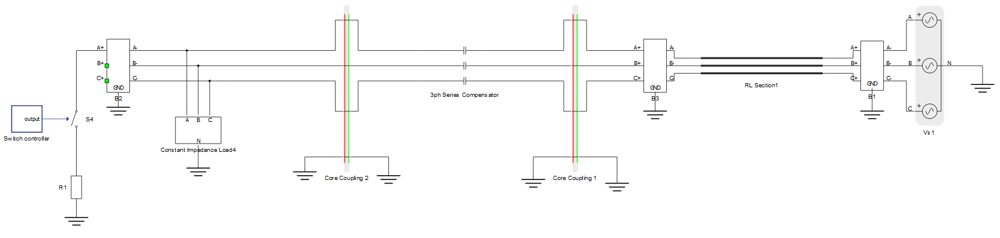
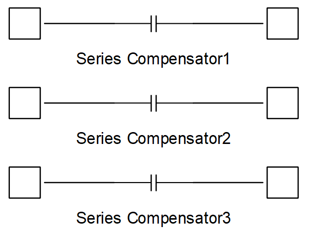
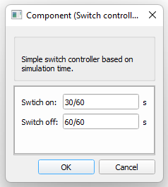
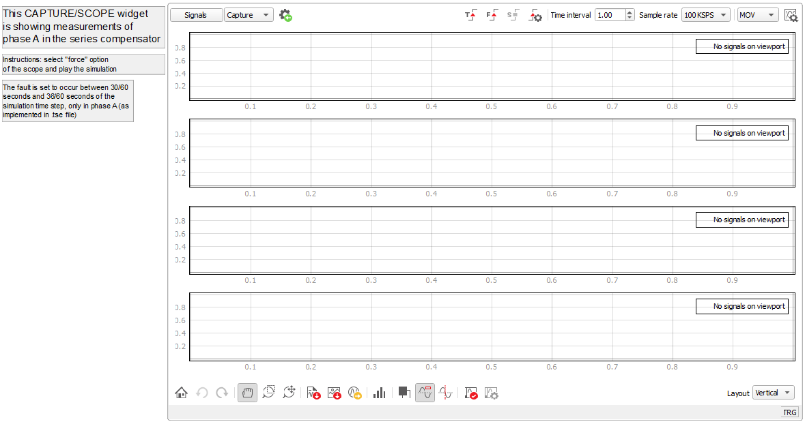
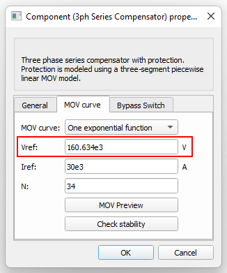
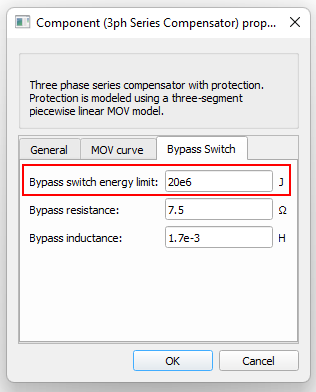
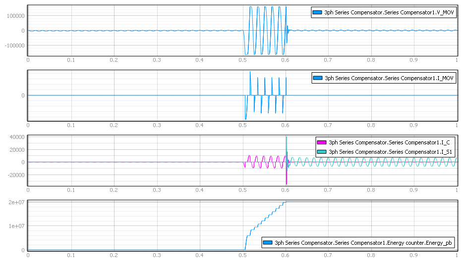
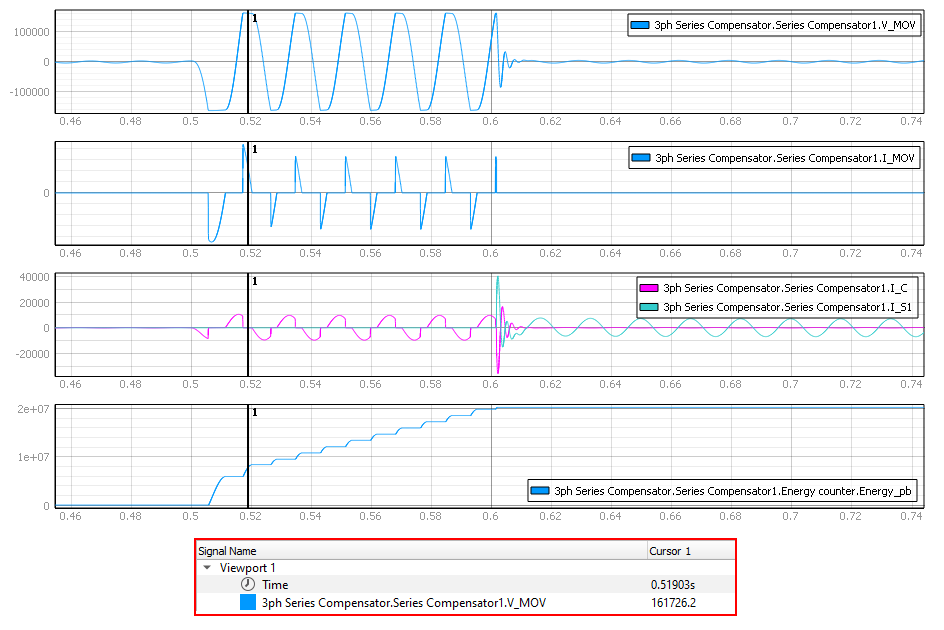

Series Compensator example
Demonstration of a Series Compensator response to a fault, including MOV and bypass switch functionality.
Introduction
The use of series capacitance compensation in transmission lines considerably increases transfer capabilities and has proven to be an effective and economical strategy for maximizing the utility of transmission assets. System stability is also enhanced by reducing line impedance through the insertion of capacitive reactive power, which compensates for inductive reactance [1]. Nevertheless, the protections embedded in series compensation systems are composed of critical equipment to prevent damage to the capacitor during a contingency, such as a Metal Oxide Varistor (MOV) and a Bypass Switch [2]. The MOV acts as an open circuit until a given voltage level is reached, when it starts to conduct hence protecting the capacitor bank. The Bypass Switch closes to protect the MOV when its conduction goes beyond the material energy flow threshold level, avoiding excessive energy absorption over a short period of time that can cause cracking of the metal oxide disks [3]. This example model consists of a 500 kV 3-phase transmission line with series compensation and a time-define fault insertion mechanism.
The objective of this example is to show the MOV model protecting the capacitor bank by clamping overvoltage above a pre-defined limit and to show the operation of the bypass switch that takes the MOV out of the conductive state by changing the energy path, protecting the MOV.
Model description
The model is comprised of the following elements, as shown in Figure 1:
- Voltage source (Vs1)
- Transmission line (RL Section 1)
- Series compensation (3ph Series Compensator)
- Load (Constant Impedance Load 4)
- Fault (S4 + Switch Controller + R1)

The three-phase grid consists of a 500 kV / 60 Hz voltage source and of a transmission line modeled as an RL-section. The 3ph Series Compensator is a subsystem composed of one single-phase Series Compensator component per phase of the electrical system, as shown in Figure 2. Each single-phase Series Compensator component has an internal MOV model and a bypass switch, both of which can be parametrized through the component's mask. In this example, the 3ph Series Compensator subsystem was designed to have an identical mask to its internal components, with a few modifications to allow for automatic change of the internal components' parameters. All settings can be configured on the top layer component properties.

Figure 2 shows the internal circuit of the Series Compensator component. The MOV is modeled as a diode leg component, two controlled voltage sources, and two resistors. The diode leg ensures that the curve Voltage x Current behaves in a similar way to the real-life MOV device curve. Controlled voltage sources and resistors adjust the diode leg's conductance limits and the curve slopes, respectively. The resistors' values inside the MOV are automatically calculated based on the component parameters.

The bypass breaker is implemented with a branch that contains the switch S connected in series with the parallel association of the resistor R and the inductor L. The branch is connected in parallel to the MOV. An energy counter calculates the energy flow through the MOV and closes the switch S when the flow surpasses the defined energy threshold.
Finally, the load is modeled as a constant impedance and the fault insertion component is modeled as a Switch Controller and a single-phase switch. The Switch Controller closes the switch at the specified simulation time, applying a single-phase short-circuit with fault resistance R1. The opening and closing time of the fault switch can be defined on the Switch Controller's mask, as shown in Figure 4.

Two core couplings were used in this example to distribute the resource usage between 3 different cores of the HIL device. The use of three Series Compensator components in the same SPC requires a large matrix memory utilization. Therefore, the 3ph Series Compensator must be placed in a separated core with coupling components on each of its sides, as shown in Figure 1. The red side of a coupling component represents its current source side. Considering topology conflict implications that can be caused by current sources, Core Coupling 1 was placed with its red side facing the Series Compensator, while Core Coupling 2 was placed with its red side facing the load. This core coupling placement orientation aims to provide a path for current flow from the coupling sources while also connecting the slower dynamics circuit parts of the voltage sources (green side). It's important to highlight that the voltage source sides of both couplings don't face the Series Compensator at the same time, since this would cause degeneration of the sources connected in parallel. Four-phase core couplings were used to pass the system ground reference to all cores. For more information regarding principles around core coupling placement, please refer to our dedicated documentation pages.
Simulation
This application example comes with a pre-built SCADA panel (Figure 5), composed of only a Capture/Scope widget, with the signals of interest already configured on it (all referred to phase A). The panel can be freely customized to fit your needs.

The most significant events of the simulation last 1 second. A single line fault on phase A is set to happen in the simulation time between 30/60 and 60/60 seconds. The fault is applied when the Switch Controller closes the switch S4 at time 30/60 s. The controller clears the fault, opening S4, at time 60/60 s. The 3ph Series Compensator component is set to have a capacitor overvoltage threshold of around 160 kV and an energy limit flowing through the MOV of 20 MJ (Figure 6 and Figure 7). These values are defined according to the MOV datasheet as demonstrated in [1] and [4].


The first and second windows of the Scope widget show the voltage and the current, respectively, on the MOV during the simulation. The third window shows two signals: the current that flows on the capacitor and on the bypass switch. The fourth window shows the energy that flows through the MOV. To capture the planned events of the simulation, it is necessary to click the "Force" button of the capture/scope widget before starting the simulation, since no automatic trigger is configured. The simulation results are shown in Figure 8.

Figure 9 shows the results with a zoom on the simulation main event, with a cursor positioned to measure the voltage level of viewport 1. Note that the voltage clamp is in accordance to the defined voltage threshold of the 3ph Series Compensator, as shown in Figure 9. On the signals shown in viewport 2 and 3, it is possible to note that the currents of the capacitor bank and the MOV are complementary, confirming that the MOV works as expected. In viewports 3 and 4 of Figure 8, it is also possible to verify that the bypass switch closed when the energy level reached 20 MJ.

Test Automation
We don’t have a test automation for this example yet. Let us know if you wish to contribute and we will gladly have you signed on the application note!
Example requirements
Table 1 provides detailed information about the file locations and hardware requirements for running the model in real-time, followed by the HIL device resource utilization when running the model using this minimal hardware configuration. This information is provided to help you with running and customizing the model as you see fit.
| Files | |
|---|---|
| Typhoon HIL files | examples\models\microgrid\FACTS series compensator example.tse series compensator example.cus |
| Minimum hardware requirements | |
| No. of HIL devices | 1 |
| HIL device model | HIL604 |
| Device configuration | 4 |
| HIL device resource utilization | |
| No. of processing cores | 3 |
| Max. matrix memory utilization | 54.72% (core0) 0.11% (core1) 0.11% (core2) |
| Max. time slot utilization | 4.56% (core0) 2.62% (core1) 2.06% (core2) |
| Simulation step, electrical | 10 µs |
| Execution rate, signal processing | 100 µs |
References
[1] O. V. Sivov, H. A. Abdelsalam and E. B. Makram, "Operation of MOV-protected series compensator with wind power during faults," 2015 North American Power Symposium (NAPS), 2015, pp. 1-6, doi: 10.1109/NAPS.2015.7335164. Retrieved from https://ieeexplore.ieee.org/document/7335164
[2] D. L. Goldsworthy, "A Linearized Model for Mov-Protected Series Capacitors," in IEEE Transactions on Power Systems, vol. 2, no. 4, pp. 953-957, Nov. 1987, doi: 10.1109/TPWRS.1987.4335284. Retrieved from https://ieeexplore.ieee.org/document/4335284
[3] "IEEE Guide for Protective Relay Application to Transmission-Line Series Capacitor Banks," in IEEE Std C37.116-2018 (Revision of IEEE Std C37.116-2007), vol., no., pp.1-88, 19 Oct. 2018, doi: 10.1109/IEEESTD.2018.8497106. Retrieved from https://ieeexplore.ieee.org/document/8497106
[4] Nekoubin, Abdolamir. "Simulation of series compensated transmission lines protected with mov." World Academy of Science, Engineering and Technology 58 (2011): 1002-1006.
Authors
- Jose Octavio Cesario Pereira Pinto